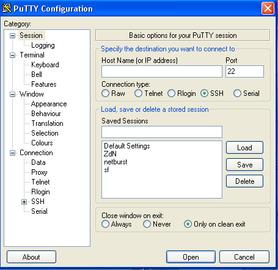
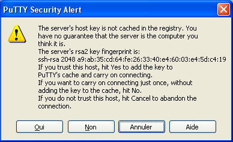
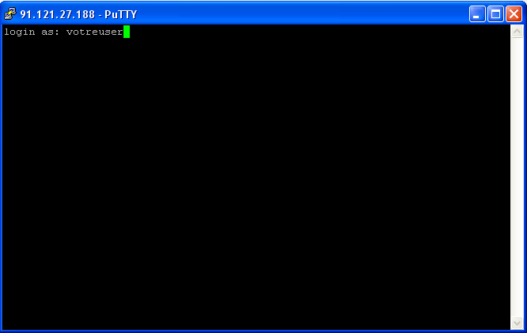
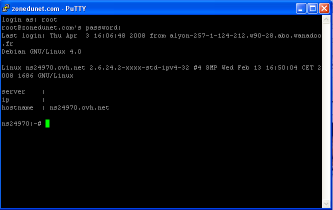

Vous souhaitez installer un serveur SSH sur votre ordinateur ou votre serveur et vous ne savez pas comment procéder ? Vous êtes à la bonne place car je vais tout vous expliquer !
SSH permet de se connecter à distance à un ordinateur. Il existe deux protocoles connus pour se connecter à distance :
Telnet : Telnet est le protocole le plus basique pour se connecter à distance à un ordinateur. Il n'est presque plus utilisé, car il ne crypte (protège) pas les données, alors si un pirate « écoute » votre connexion au serveur, il pourra avoir le mot de passe du serveur, par exemple ! Telnet sert beaucoup pour tester des services (HTTP, POP, SMTP, etc.) et savoir s'ils fonctionnent.
SSH : SSH est le protocole le plus utilisé, car il crypte les données, et un pirate ne peut pas écouter votre connexion. La première version de SSH est sortie en 1995. Cette version avait un défaut, car elle ne vérifiait pas si les données reçues étais celles voulues et cela le rendait vulnérable à des attaques actives. La version 2 de SSH a été développée par l'équipe de recherche de l'IETF « secsh ». Cette version est sortie en 2006.
Bref, SSH est recommandé, car il crypte les données et ceci rend difficile le piratage.
Pour installer SSH, rien de plus facile ! Je vous laisse deviner.
La commande est :
sudo apt-get install ssh
(N.B. : si vous êtes déjà connecté en super utilisateur (root), vous ne devez pas faire sudo.)
Et voilà ! Vous avez installé SSH. Dans la prochaine partie, on va se connecter à SSH et après le sécuriser. N'oubliez pas que si vous avez un routeur, vous devez ouvrir le port 22 si vous souhaitez vous connecter à distance! Un tutoriel pour la livebox ici (changer le port 80 par 22)ou sinon pour presque tout les routeurs: ici
Pour pouvoir configurer SSH, nous allons utiliser nano pour éditer le fichier de configuration.
Pour éditer le fichier, tapez cette commande :
sudo nano /etc/ssh/sshd_config
Ici, nous utilisons l'éditeur de texte nano (rien ne vous empêche d'utiliser un autre éditeur de texte. :p ).
Voici quelques sections intéressantes de la configuration que vous pouvez changer :
# What ports, IPs and protocols we listen for
Port 22
Cette section permet de configurer le port d'écoute du serveur. Pour une question de sécurité, vous pouvez changer cette option, car elle va nuire un peu aux pirates.
# Use these options to restrict which interfaces/protocols sshd will bind to
#ListenAddress ::
#ListenAddress 0.0.0.0
Cette section permet de dire au serveur d'écouter seulement sur certaines adresses IP. Pour pouvoir faire cela, enlevez le # du deuxième ListenAdress et remplacez 0.0.0.0 par votre adresse IP.
Cette section permet de configurer l'authentification. L'option LoginGraceTime est le temps d'attente maximum après une connexion à SSH pour l'identification. Le temps est exprimé en secondes.
PermitRootLogin permet de dire si SSH autorise ou non la connexion au compte root. Par mesure de sécurité, il vous est recommandé de mettre cette option à no.
Voilà pour les options importantes de ce serveur. Vous pouvez modifier toutes les autres options à votre guise si vous voulez.
Pour redémarrer le serveur, je vous laisse deviner. :p
sudo /etc/init.d/ssh restart
/etc/init.d/ssh est le programme qui permet de démarrer, redémarrer ou arrêter SSH.
restart permet de dire au programme de redémarrer SSH.
Dans la prochaine section, on va se connecter à SSH !
Pour se connecter à votre serveur SSH depuis Linux, la commande est :
ssh votre_adresse
Explication : ssh est le nom du programme (vous l'aurez deviné :p ). votre_adresse : remplacez ceci par l'adresse de votre serveur.
À votre première connexion, vous allez avoir une alerte indiquant que le serveur n'est pas reconnu. Tapez seulement yes et appuyez sur Entrée après.
lebelw@lebelw:/etc/ssh$ ssh localhost
The authenticity of host 'localhost (127.0.0.1)' can't be established.
RSA key fingerprint is 5c:68:63:80:b3:f5:8f:b1:da:73:73:ca:07:d3:9e:bb.
Are you sure you want to continue connecting (yes/no)? yes
Après, il vous demande un mot de passe. Par défaut, il prend comme utilisateur le compte que vous utilisez actuellement (moi en occurrence : lebelw). Vous pouvez forcer à utiliser un autre utilisateur en rajoutant l'option -l avant de vous connecter :
ssh votre_adresse -l utilisateur
Lorsque votre connexion au serveur est établie, ce texte s'affiche :
VotreUser@Votre_adresse's password:
Le serveur vous demande votre mot de passe, alors tapez-le. :p C'est normal que rien n'apparaisse, car c'est une sécurité.
Après avoir entré votre mot de passe, vous êtes finalement connecté à votre ordinateur ! Vous devriez voir quelque chose qui ressemble à cela :
lebelw@lebelw:/etc/ssh$ ssh localhost
lebelw@localhost's password:
Linux lebelw 2.6.22-14-generic #1 SMP Tue Feb 12 07:42:25 UTC 2008 i686
The programs included with the Ubuntu system are free software;
the exact distribution terms for each program are described in the
individual files in /usr/share/doc/*/copyright.
Ubuntu comes with ABSOLUTELY NO WARRANTY, to the extent permitted by
applicable law.
Last login: Thu Mar 27 14:47:14 2008
lebelw@lebelw:~$
Si vous voyez cela, c'est que vous êtes connecté à votre ordinateur avec succès !
Sous Windows
Pour vous connecter en SSH depuis Windows, vous pouvez utiliser le logiciel Putty. Voici le lien pour le télécharger : http://www.chiark.greenend.org.uk/~sgt [...] download.html Cliquez sur le lien Putty.exe et enregistrez-le. Dès qu'il est téléchargé, ouvrez-le. Vous devriez voir ceci :

Pour vous connecter à votre serveur, tapez simplement l'adresse du serveur dans Host Name (or IP adress) et cliquez sur Open. Un avertissement va apparaître :

Cliquez simplement sur Oui.
Après, vous allez voir une console comme celle-là :

Tapez simplement votre nom d'utilisateur. Après, tapez votre mot de passe. Il est normal que rien n'apparaisse, c'est une sécurité.
Si tout se passe bien, vous verrez une image semblable à celle-ci :

Et voilà ! vous savez maintenant comment installer un serveur SSH et comment vous y connecter depuis Windows et Linux !
Et voilà ! Vous savez comment installer, configurer et utiliser un serveur SSH !
Laissez-moi des commentaires, c'est mon premier tuto. :p